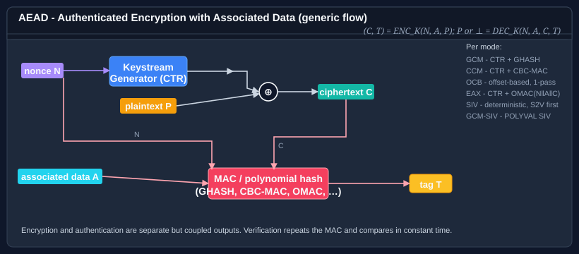

OcbModeTransform Class
Definition
- Namespace
- Bodu.Security.Cryptography
- Assembly
- Bodu.Security.Cryptography.dll
- Package
- Bodu.Security.Cryptography 1.3.0
- Source
- OcbModeTransform.cs
Applies Offset CodeBook mode version 3 (OCB3) to an underlying IBlockCipher, providing single-pass authenticated encryption with associated data per RFC 7253.
public sealed class OcbModeTransform : IAeadBlockCipherModeTransform, IAeadTransform, IDisposable- Inheritance
-
OcbModeTransform
- Implements
- Inherited Members
- Extension Methods
Examples
using System.Security.Cryptography;
using Bodu.Security.Cryptography;
using Bodu.Security.Cryptography.Extensions;
using IBlockCipher cipher = new AesBlockCipher(key);
byte[] iv = BuildOcbIv(nonce); // first 12 bytes of the IV are the nonce
using IAeadBlockCipherModeTransform ocb = new OcbModeTransform(cipher, iv, tagSize: 128);
byte[] sealed_ = ocb.Encrypt(plaintext, associatedData: header);Remarks

OCB3 collapses the two pipelines of the generic AEAD shape above into a single pass: the keystream and the MAC chain share the same per-block offset Δi, so each block is touched by the cipher exactly once. In the diagram, this corresponds to merging the top and bottom arrows that reach the MAC - the ciphertext output is simultaneously the next input to the authentication accumulator.
The nonce is derived from the first 12 bytes of the IV supplied to the constructor. The tag size defaults to 128
bits (16 bytes / TAGLEN = 128) and may be set to any positive multiple of 8 bits between 8 and the cipher block size
via the tagSize constructor parameter. Supported RFC 7253 values are 64, 96, and 128 bits (8, 12, and 16
bytes).
Offset initialization uses the RFC 7253 §2.4 K_top stretch:
Nonce = num2str(TAGLEN mod 128, 7) || zeros(120-bitlen(N)) || 1 || N
bottom = str2num(Nonce[123..128])
K_top = ENCIPHER(K, Nonce[1..122] || zeros(6))
Stretch = K_top || (K_top[1..64] XOR K_top[9..72]) -- adjacent-byte XOR
Offset_0 = Stretch[1+bottom..128+bottom]The L array uses GF(2^128) doubling with polynomial x^128 + x^7 + x^2 + x + 1 (big-endian).
When to use OCB3. Pick OCB3 when you want a single-pass AEAD mode without GCM's catastrophic-on-nonce-reuse profile - OCB still requires nonces to be unique per key, but the failure mode is graceful (only that one message's confidentiality is lost; the GHASH-key-leak amplification does not apply). OCB historically had patent encumbrances that limited adoption; the patents have since been placed into the public domain, but GcmModeTransform remains the more widely deployed choice in practice. For nonce-misuse resistance prefer GcmSivModeTransform or SivModeTransform; for constrained environments prefer CcmModeTransform.
Constructors
OcbModeTransform(IBlockCipher, byte[], int)
Initializes a new instance of the OcbModeTransform class.
public OcbModeTransform(IBlockCipher cipher, byte[] iv, int tagSize = 128)Parameters
cipherIBlockCipherThe block cipher. Must have a 128-bit (16-byte) block size.
ivbyte[]The initialization vector. The first 12 bytes are used as the OCB3 nonce. Must equal the cipher block size. A defensive copy is taken.
tagSizeintThe authentication-tag size, in bits, of the OCB3 tag. Must be a positive multiple of 8 between 8 bits (1 byte) and the cipher block size. RFC 7253 defines recommended values of 64, 96, and 128 bits (8, 12, and 16 bytes). Defaults to 128 bits (16 bytes).
Exceptions
- ArgumentNullException
cipherorivis null.- ArgumentException
cipherdoes not have a 128-bit (16-byte) block size,ivlength does not equal the cipher block size, ortagSizeis outside the range [8 bits, cipher block size] or is not a positive multiple of 8.
Properties
TagSize
Gets the authentication-tag size, in bits.
public int TagSize { get; }Property Value
- int
The authentication-tag size, in bits.
Methods
Decrypt(ReadOnlySpan<byte>, Span<byte>)
Decrypts ciphertextWithTag and verifies the authentication tag.
public int Decrypt(ReadOnlySpan<byte> ciphertextWithTag, Span<byte> output)Parameters
ciphertextWithTagReadOnlySpan<byte>The ciphertext followed immediately by the TagSize / 8 byte authentication tag. Must be at least TagSize / 8 bytes long.
outputSpan<byte>Receives the decrypted plaintext. Must be at least
ciphertextWithTag.Length - (TagSize / 8)bytes long.
Returns
- int
Bytes written:
ciphertextWithTag.Length - (TagSize / 8).
Remarks
Authentication failure contract. All implementations honour the same observable guarantee on tag mismatch: CryptographicException is thrown and no plaintext is released to the caller. Implementations achieve this in one of two ways:
-
Verify-before-release. The tag is compared in constant time before any plaintext byte is written to
output. Used by GCM, CCM, EAX, and OCB. -
Write-then-clear. The candidate plaintext is streamed into
outputfirst because the algorithm's structure requires the transform to complete before the tag can be computed. The tag is then compared in constant time; on mismatchoutputis zeroed via ZeroMemory(Span<byte>) before the exception is thrown. Used by Ascon-AEAD-128 and GCM-SIV.
In both cases the API is strictly one-shot: a failed decryption invalidates the instance, and subsequent calls throw InvalidOperationException. Construct a fresh instance per message.
Exceptions
- CryptographicException
The authentication tag did not match.
- ArgumentException
ciphertextWithTagis shorter than TagSize / 8 bytes, oroutputis too small.- InvalidOperationException
The instance has already encrypted or decrypted a message, including after a previous tag-mismatch failure. AEAD transforms are single-use per message - construct a fresh instance.
Dispose()
Releases the resources used by this instance and clears retained nonce, OCB offset constants, and associated-data state from memory.
public void Dispose()Remarks
The supplied IBlockCipher is not disposed by this type. Ownership remains with the caller.
Encrypt(ReadOnlySpan<byte>, Span<byte>)
Encrypts plaintext and appends the authentication tag to output.
public int Encrypt(ReadOnlySpan<byte> plaintext, Span<byte> output)Parameters
plaintextReadOnlySpan<byte>The data to encrypt.
outputSpan<byte>Receives the ciphertext followed immediately by the TagSize / 8 byte tag. Must be at least
plaintext.Length + (TagSize / 8)bytes long.
Returns
- int
Total bytes written:
plaintext.Length + (TagSize / 8).
Exceptions
- ArgumentException
outputis too small.- InvalidOperationException
The instance has already encrypted or decrypted a message. AEAD transforms are single-use per message - construct a fresh instance.
ProcessAssociatedData(ReadOnlySpan<byte>)
Processes associated data (AAD) that will be authenticated but not encrypted. Must be called before Encrypt(ReadOnlySpan<byte>, Span<byte>) or Decrypt(ReadOnlySpan<byte>, Span<byte>).
public void ProcessAssociatedData(ReadOnlySpan<byte> associatedData)Parameters
associatedDataReadOnlySpan<byte>The bytes to authenticate. May be empty to indicate no associated data.
Exceptions
- InvalidOperationException
Associated data has already been processed on this instance, or the instance has already completed an Encrypt(ReadOnlySpan<byte>, Span<byte>) or Decrypt(ReadOnlySpan<byte>, Span<byte>) operation.
Applies to
| Product | Versions |
|---|---|
| .NET | 8, 10 |